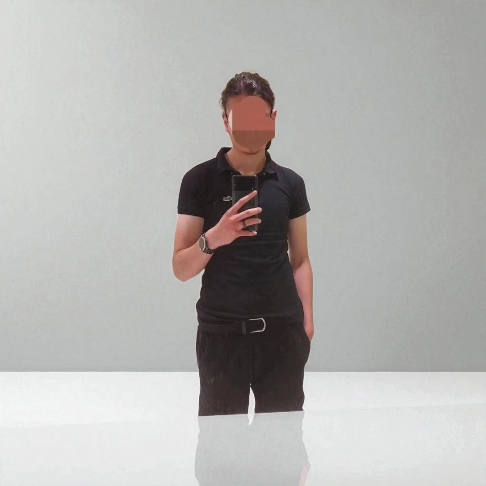

00:00:00
NEXUS
PROJETS
Votre portail vers l'avenir numérique.

@merickkn
...
abonnés (Flux Réel)
Module 93003
Interface de Données
Quantum Converter
Opérations Avancées
Archive Personnelle
Terminal de Consultation
Log R&D
Pensées et Explorations